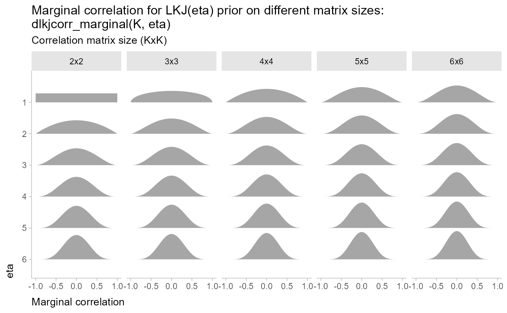

Marginal distribution of a single correlation from an LKJ distribution
Source:R/lkjcorr_marginal.R
lkjcorr_marginal.RdMarginal distribution for the correlation in a single cell from a correlation matrix distributed according to an LKJ distribution.
Usage
dlkjcorr_marginal(x, K, eta, log = FALSE)
plkjcorr_marginal(q, K, eta, lower.tail = TRUE, log.p = FALSE)
qlkjcorr_marginal(p, K, eta, lower.tail = TRUE, log.p = FALSE)
rlkjcorr_marginal(n, K, eta)Arguments
- x, q
vector of quantiles.
- K
Dimension of the correlation matrix. Must be greater than or equal to 2.
- eta
Parameter controlling the shape of the distribution
- log, log.p
logical; if TRUE, probabilities p are given as log(p).
- lower.tail
logical; if TRUE (default), probabilities are \(P[X \le x]\) otherwise, \(P[X > x]\).
- p
vector of probabilities.
- n
number of observations. If
length(n) > 1, the length is taken to be the number required.
Value
dlkjcorr_marginalgives the densityplkjcorr_marginalgives the cumulative distribution function (CDF)qlkjcorr_marginalgives the quantile function (inverse CDF)rlkjcorr_marginalgenerates random draws.
The length of the result is determined by n for rlkjcorr_marginal, and is the maximum of the lengths of
the numerical arguments for the other functions.
The numerical arguments other than n are recycled to the length of the result. Only the first elements
of the logical arguments are used.
Details
The LKJ distribution is a distribution over correlation matrices with a single parameter, \(\eta\). For a given \(\eta\) and a \(K \times K\) correlation matrix \(R\):
$$R \sim \textrm{LKJ}(\eta)$$
Each off-diagonal entry of \(R\), \(r_{ij}: i \ne j\), has the following marginal distribution (Lewandowski, Kurowicka, and Joe 2009):
$$\frac{r_{ij} + 1}{2} \sim \textrm{Beta}\left(\eta - 1 + \frac{K}{2}, \eta - 1 + \frac{K}{2}\right) $$
In other words, \(r_{ij}\) is marginally distributed according to the above Beta distribution scaled into \((-1,1)\).
References
Lewandowski, D., Kurowicka, D., & Joe, H. (2009). Generating random correlation matrices based on vines and extended onion method. Journal of Multivariate Analysis, 100(9), 1989--2001. doi:10.1016/j.jmva.2009.04.008 .
See also
parse_dist() and marginalize_lkjcorr() for parsing specs that use the
LKJ correlation distribution and the stat_slabinterval() family of stats for visualizing them.
Examples
library(dplyr)
library(ggplot2)
theme_set(theme_ggdist())
expand.grid(
eta = 1:6,
K = 2:6
) %>%
ggplot(aes(y = ordered(eta), dist = "lkjcorr_marginal", arg1 = K, arg2 = eta)) +
stat_slab() +
facet_grid(~ paste0(K, "x", K)) +
scale_y_discrete(limits = rev) +
labs(
title = paste0(
"Marginal correlation for LKJ(eta) prior on different matrix sizes:\n",
"dlkjcorr_marginal(K, eta)"
),
subtitle = "Correlation matrix size (KxK)",
y = "eta",
x = "Marginal correlation"
) +
theme(axis.title = element_text(hjust = 0))
